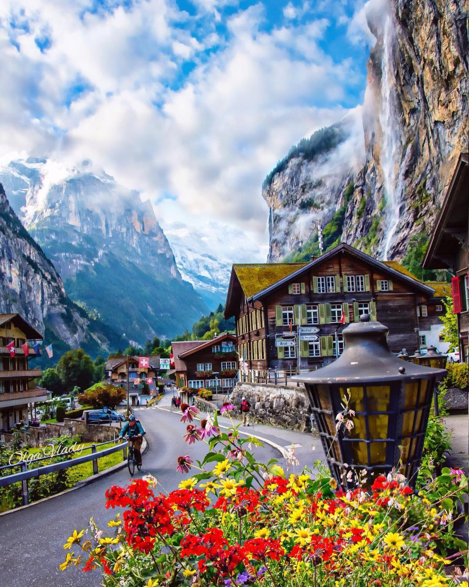
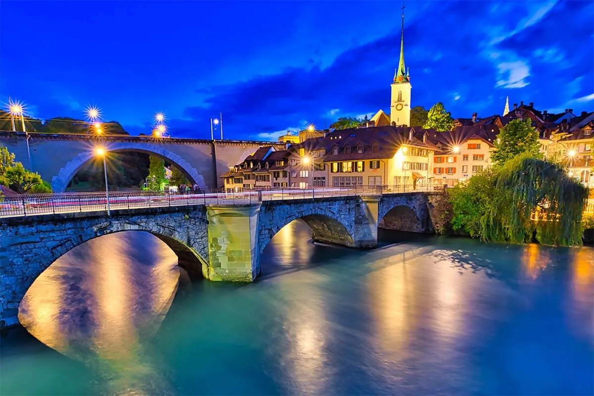

Lauterbrunnen

A unique village situated in the Swiss Alps that is full of sensational rocky cliffs and a bonus of
the
300
meter-high Staubbach Falls, plus the 72 waterfalls in Lauterbrunnen Valley
Interlaken
An amzing resort town that is located between Lake Brienz and Lake Thun. It has plenty of acres of
flower
gargens, peaks of mountains and open landscapes.It comes with plenty of activities to do scuch as
kayaking,
hiking, abseling,skiing, paragliding and snowboarding.It also has 45 modes of different transport
Bern

A wonderful old town that has the tallest cathedral in Switzerland.It also consists of beautiful
meseums
and
galleries. Its a must visit for people who love art.